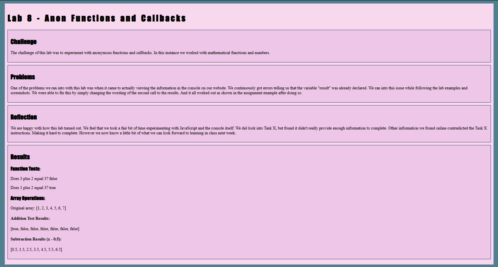
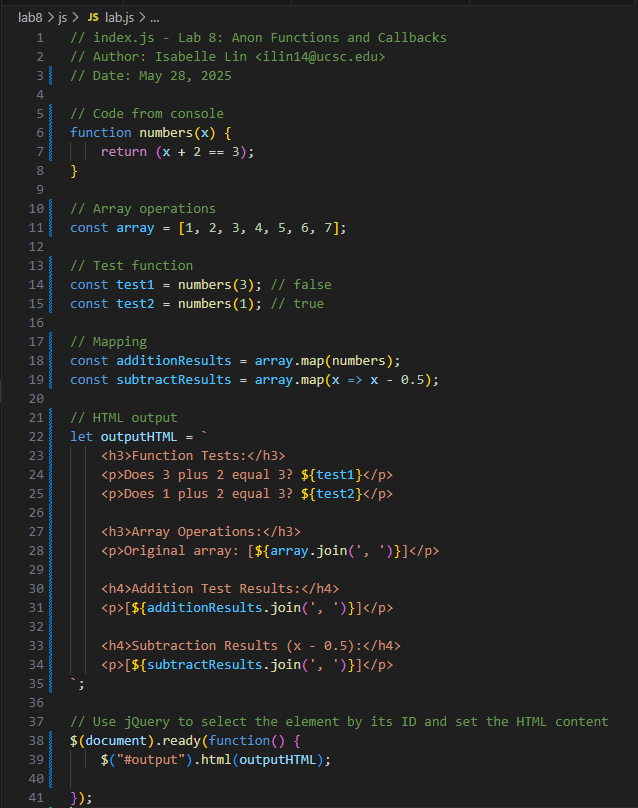

Lab 14 - Debugging Tools & Strategies
Challenge
The challenge of this lab was to look back at other labs from this quarter and debug them so that they work properly.
Problems
The biggest issue we ran into was the fact that we did not have any labs that actually needed to be debugged. However, the Task X bonus was vague and confusing. The first point was to experiment with debugger to create breakpoints in our code. We weren't entirely sure what that meant or what it entailed. We also looked into the second option, however, everyone on stackoverflow is asking questions that we could not answer given our short time in this class and lack of experience. As such, we decided to tackle an old Task X that had bothered us from Lab 8.
Reflection
Since this lab was very different from the others it was certainly confusing. Despite the obstacles we faced in where to begin, we were proud that we were able to revisit an old lab and make an improvement upon it thanks to the knowledge we gained throughout the quarter. As we are much more used to coding in HTML, CSS, and JS now the Task X of lab 8 didn't appear as daunting as before. And we were able to figure it out quickly.
Results
Debugging
 In Lab 8, we could not figure out Task X so for Lab 14, we chose to head back and debug what was preventing the output from showing up on the webpage besides the console. After reviewing what we have learned so far since lab 8, I went back to my JS code to spot what might be the issue. Turns out, the mapResults variable isn't actually containing my results, instead, the results are only going to console.log(). I tried fixing it myself but the result's still wouldn't display properly, which is when I turned to DeepSeek to ask for help. It fixed my code, and I reas through everything again to understand the changes; maily the HTML output and adding const in front of my variables to stabilize the value.